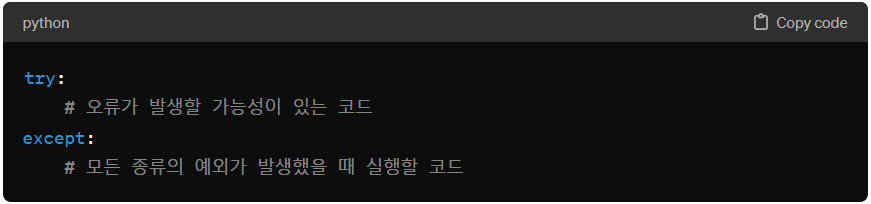
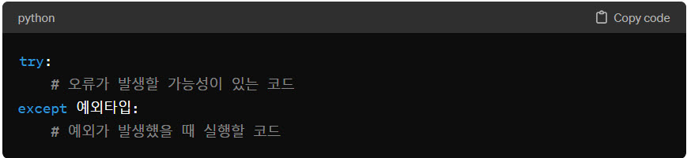
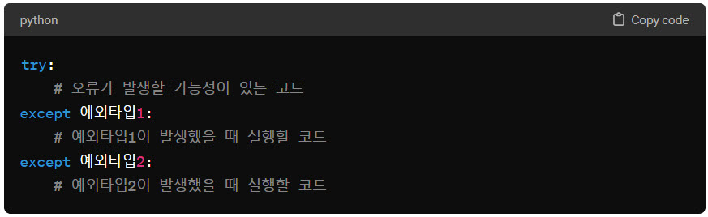
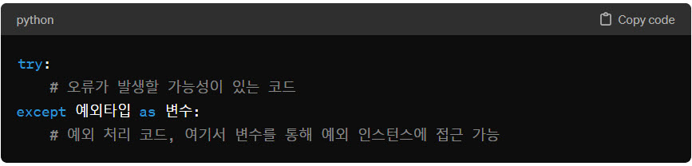
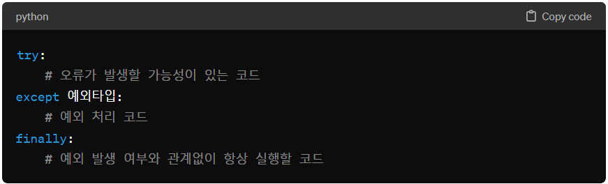

파이썬의 try - except 구문에 대해 설명해주세요
파이썬의 try - except 구문에 대해 설명해주세요
 파이썬에서 try-except 구문은 예외 처리를 위해 사용됩니다. 이 구문을 사용함으로써 프로그램이 예외 상황을 만났을 때 갑작스럽게 중단되는 것을 방지하고, 대신에 개발자가 정한 방식으로 예외를 처리할 수 있게 됩니다. 이를 통해 프로그램의 안정성과 신뢰성을 높일 수 있습니다.
파이썬에서 try-except 구문은 예외 처리를 위해 사용됩니다. 이 구문을 사용함으로써 프로그램이 예외 상황을 만났을 때 갑작스럽게 중단되는 것을 방지하고, 대신에 개발자가 정한 방식으로 예외를 처리할 수 있게 됩니다. 이를 통해 프로그램의 안정성과 신뢰성을 높일 수 있습니다.
모든 예외 처리
모든 종류의 예외를 처리하고자 할 때는 예외 타입을 지정하지 않고 except만 사용합니다. 특정 예외 처리
- - try 블록 내에는 오류가 발생할 가능성이 있는 코드를 배치합니다.
- - except 블록은 try 블록 내에서 예외가 발생했을 때 실행될 코드를 담고 있습니다. 필요에 따라 특정 예외 타입을 지정하여 그 예외 타입에 대해서만 예외 처리를 할 수 있습니다.
다중 예외 처리
여러 종류의 예외를 처리하기 위해서는 여러 except 구문을 사용할 수 있습니다. 각각의 except 블록에서 다른 예외 타입을 지정해 다양한 예외 상황에 대응할 수 있습니다. 예외 인스턴스 활용
except 구문에서 예외 타입 뒤에 변수를 지정하면, 발생한 예외의 인스턴스를 해당 변수에 할당할 수 있습니다. 이를 통해 예외에 관한 추가 정보에 접근할 수 있습니다. finally 구문
finally 구문은 예외 발생 여부와 관계없이 실행되어야 하는 코드를 위한 블록입니다. 주로 자원 해제나 파일 닫기와 같은 정리 작업에 사용됩니다. 
ValueError
try:
number = int("not a number")
except ValueError:
print("ValueError: 숫자가 아닌 값을 숫자로 변환하려고 했습니다.")
TypeError
try:
result = "hello" + 5
except TypeError:
print("TypeError: 문자열과 숫자를 더할 수 없습니다.")
IndexError
my_list = ["토지", "해리 포터", "삼국지"]
try:
print(my_list[3])
except IndexError:
print("IndexError: 리스트의 범위를 벗어난 인덱스에 접근하려고 했습니다.")
KeyError
book_info = {'토지': '박경리 작, 한국 현대사의 아픔과 희망을 그린 대하소설',
'해리 포터': 'J.K. 롤링 작, 마법 세계의 모험을 그린 판타지 소설',
'삼국지': '나관중 작, 중국 삼국 시대의 영웅들을 그린 역사소설'}
try:
# 존재하지 않는 소설의 정보 조회 시도
print(f"'구운몽' 책 정보: {book_info['구운몽']}")
except KeyError:
print("KeyError: 해당 제목의 책 정보가 존재하지 않습니다.")
IndentationError
# IndentationError 예제
number = 10
if number > 5:
print("Number는 5보다 큽니다.") # 여기에 들여쓰기가 필요합니다.
SyntaxError
괄호 누락
print("Hello, world!"
콜론(:) 누락
if True
print("True입니다.")